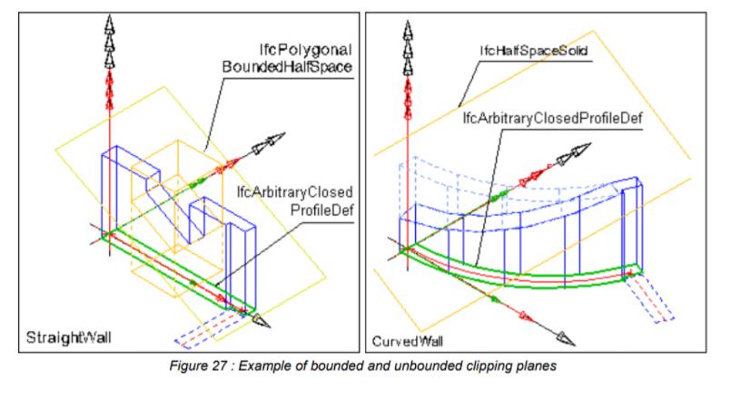

üåçüö™ Elementos generales y productos
üåç Elementos generales: informaci√≥n básica que afecta a todo el archivo.
üö™ Productos: objetos que representan elementos "tangibles".
Elementos generales
ü뮂Äçüé® Autor√≠a
⏱ Unidades
üåç Contextos de representaci√≥n
üå≥ Estructura espacial
Elementos generales
ü뮂Äçüé® Autor√≠a
⏱ Unidades
üåç Contextos de representaci√≥n
üå≥ Estructura espacial
Coherencia
ü뮂Äçüé® Autor√≠a
La "firma" del autor, la organización y la aplicación.
¿Quién hizo el archivo?
#41= IFCOWNERHISTORY(#38,#5,$,.NOCHANGE.,$,$,$,1606175882);
¿Quién hizo el archivo?
#1= IFCORGANIZATION($,'Autodesk Revit 2021 (ESP)',$,$,$);
#5= IFCAPPLICATION(#1,'2021','Autodesk Revit 2021 (ESP)','Revit');
#35= IFCPERSON($,'','Antonio',$,$,$,$,$);
#37= IFCORGANIZATION($,'','',$,$);
#38= IFCPERSONANDORGANIZATION(#35,#37,$);
#41= IFCOWNERHISTORY(#38,#5,$,.NOCHANGE.,$,$,$,1606175882);
Coherencia = transparencia
⚠️ Abro un hilo #hacker importante… ⚠️
— Jaime G√≥mez-Obreg√≥n (@JaimeObregon) September 6, 2021
Para contaros lo m√≠o con la transparencia del Gobierno de üáµüá±@Cantabriaes. Escribo todo esto porque estoy convencido de que es sano para el pa√≠s y para la democracia que haya sucedido. Y QUE SE SEPA.
Todo empezó durante el confinamiento… pic.twitter.com/BkyZDJHdOS
⏱ Unidades
Cómo se está midiendo el archivo.
⏱ 4 tipos de unidades
Unidades del SI
Unidades de conversión
Unidades derivadas
Unidades de contexto
ü¶¥2 ámbitos de unidades
Unidades globales
Unidades locales

Unidades SI
#1=IFCPROJECT('fabcdeghijklmnopqrst02', #7, 'test project', $,$,$,$,(#20), #30);
/* global units */
#30= IFCUNITASSIGNMENT((#33, #34, #35));
#33= IFCSIUNIT(*, .LENGTHUNIT., .MILLI., .METRE.);
#34= IFCSIUNIT(*, .AREAUNIT., $, .SQUARE_METRE.);
#35= IFCSIUNIT(*, .VOLUMEUNIT., $, .CUBIC_METRE.);
#36= IFCSIUNIT(*, .PLANEANGLEUNIT., $, .RADIAN.);

Unidades de conversión
#1= IFCPROJECT('fabcdeghijklmnopqrst02',#7,'test project',$,$,$,$,(#20),#30);
#30= IFCUNITASSIGNMENT((#33, #34, #35, #36));
#33= IFCSIUNIT(*, .LENGTHUNIT., .MILLI., .METRE.);
#34= IFCSIUNIT(*, .AREAUNIT., $, .SQUARE_METRE.);
#35= IFCSIUNIT(*, .VOLUMEUNIT., $, .CUBIC_METRE.);
#36= IFCCONVERSIONBASEDUNIT(#40, .PLANEANGLEUNIT., 'DEGREE', #41);
#40= IFCDIMENSIONALEXPONENTS(0, 0, 0, 0, 0, 0, 0);
#41= IFCMEASUREWITHUNIT(IFCPLANEANGLEMEASURE(57.29577951308232), #50);
#50= IFCSIUNIT(*. .PLANEANGLEUNIT., $, .RADIAN.);
Unidades derivadas
#1=IFCPROJECT('abcdefghijklmnopqrst09', #100, '', $, $, $, $, (#101), #2);
#2=IFCUNITASSIGNMENT((#3));
#3=IFCDERIVEDUNIT((#5, #6, #4), .SPECIFICHEATCAPACITYUNIT., $);
#4=IFCDERIVEDUNITELEMENT(#7, 1);
#5=IFCDERIVEDUNITELEMENT(#8, -1);
#6=IFCDERIVEDUNITELEMENT(#9, -1);
#7=IFCSIUNIT(*, .ENERGYUNIT., $, .JOULE.);
#8=IFCSIUNIT(*, .MASSUNIT., .KILO., .GRAM.);
#9=IFCSIUNIT(*, .THERMODYNAMICTEMPERATUREUNIT., $, .KELVIN.);
Unidades derivadas
#1=IFCPROJECT('abcdefghijklmnopqrst10', #100, '', $, $, $, $, $, #2, $, $);
#2=IFCUNITASSIGNMENT((#8));
#3=IFCRELASSIGNSTOPROCESS'abcdefghijklmnopqrst11', #100, $, $, (#51,#52), $, #53, #4);
#4=IFCMEASUREWITHUNIT(10., #5);
#5=IFCCONVERSIONBASEDUNIT(#6, .VOLUMEUNIT., 'LITRE', #7);
#6=IFCDIMENSIONALEXPONENTS(3, 0, 0, 0, 0, 0, 0);
#7=IFCMEASUREWITHUNIT(IFCVOLUMEMEASURE(0.001), #8);
#8=IFCSIUNIT(*, .VOLUMEUNIT., $, .CUBIC_METRE.);
⚡ 2 reglas generales
Usar metros para medir distancias.
Usar unidades SI (no de conversión) para unidades globales (salvo quizás ángulos).
üåç Contexto de representaci√≥n
Al menos tiene que haber 1 por proyecto.
#119= IFCPROJECT('0w984V0GL6yR4z75XVLWOq',#41,'0001',$,$,'Nombre de proyecto','Estado de proyecto',(#111),#106);
#111= IFCGEOMETRICREPRESENTATIONCONTEXT($,'Model',3,1.00000000000000E-5,#108,#109);
#114= IFCGEOMETRICREPRESENTATIONSUBCONTEXT('Axis','Model',*,*,*,*,#111,$,.GRAPH_VIEW.,$);
#116= IFCGEOMETRICREPRESENTATIONSUBCONTEXT('Body','Model',*,*,*,*,#111,$,.MODEL_VIEW.,$);
#117= IFCGEOMETRICREPRESENTATIONSUBCONTEXT('Box','Model',*,*,*,*,#111,$,.MODEL_VIEW.,$);
#118= IFCGEOMETRICREPRESENTATIONSUBCONTEXT('FootPrint','Model',*,*,*,*,#111,$,.MODEL_VIEW.,$);
üë©‚Äçüè´ Recordatorio: el IFC está limitado por importadores/exportadores. Pocas aplicaciones usan el contexto, aunque es una funcionalidad útil. Eso no quiere decir que no se vaya a implementar en el futuro.
üå≥ Estructura espacial
La jerarquía de todos los objetos del edificio.
Un objeto está en una habitación, que está en una planta, que está en un edificio, que está en un solar que está en el mundo.
Un IfcProduct está en un IfcSpace, que está en un IfcBuildingStorey, que está en IfcBuilding, que está en un IfcSite que está en el IfcProject.
üîÄ Primer ejemplo de relaci√≥n indirecta: IfcRelAggregates entre elementos espaciales, y IfcRelContainsInSpatialStructure entre objetos y elementos espaciales.
#1=IFCPROJECT('abcdefghijklmnopqrs101', #101, 'sample project', $, $, $, $, (#1000),#1010);
#3=IFCSITE('abcdefghijklmnopqrs103', #103, $, $, $, $, $, $, .ELEMENT., $, $, $, $, $);
#4=IFCBUILDING('abcdefghijklmnopqrs104', #104, $, $, $, $, $, $, .ELEMENT., $, $, $);
#6=IFCBUILDING('abcdefghijklmnopqrs106', #106, $, $, $, $, $, $, .PARTIAL., $, $, $);
#7=IFCBUILDING('abcdefghijklmnopqrs107', #107, $, $, $, $, $, $, .PARTIAL., $, $, $);
#8=IFCBUILDINGSTOREY('abcdefghijklmnopqrs108', #108, $, $, $, $, $, $, .ELEMENT., $);
#9=IFCBUILDINGSTOREY('abcdefghijklmnopqrs109', #109, $, $, $, $, $, $, .ELEMENT., $);
#21=IFCBUILDINGSTOREY('abcdefghijklmnopqrs121', #121, $, $, $, $, $, $, .ELEMENT., $);
#22=IFCBUILDINGSTOREY('abcdefghijklmnopqrs122', #122, $, $, $, $, $, $, .ELEMENT., $);
#23=IFCBUILDINGSTOREY('abcdefghijklmnopqrs123', #123, $, $, $, $, $, $, .ELEMENT., $);
#10=IFCRELAGGREGATES('abcdefghijklmnopqrs110', #110, $, $, #1, (#3));
#11=IFCRELAGGREGATES('abcdefghijklmnopqrs111', #111, $, $, #3, (#4));
#12=IFCRELAGGREGATES('abcdefghijklmnopqrs112', #112, $, $, #4, (#6, #7));
#13=IFCRELAGGREGATES('abcdefghijklmnopqrs113', #113, $, $, #6, (#8, #9));
#14=IFCRELAGGREGATES('abcdefghijklmnopqrs114', #114, $, $, #7, (#21, #22, #23));
üåç IfcProject
Representa el proyecto. Solo puede exitir 1 en un archivo IFC.
Determina las unidades globales.
Determina el sistema de coordenadas global en forma de IfcGeometricRepresentationContext.
üß≠ IfcSite
Representa el solar.
Determina la ubicación geográfica del edificio (si está definida).
Determina los datos de la parcela.
üåÑ ¿Tiene geometr√≠a el IfcSite?
Generalmente no. No obstante, se permite asignarle una geometría en forma de puntos topográficos o malla (siguiendo especificaciones determinadas por la guía de implementación).
üë™ ¿Tiene hijos el IfcSite aparte de IfcBuilding?
Generalmente no. No obstante, se permite asignarle elementos exteriores (ej. un árbol en el jardín).
üè† IfcBuilding
Representa el edificio.
Contiene la dirección del edificio.
Contiene un dato de la elevación del terreno a nivel orientativo, aunque lo realmente relevante es el modelo de IfcSite (si lo hay).
üè† ¿Tiene geometr√≠a el IfcBuilding?
Generalmente no (a pesar de ser hijo de IfcProduct).
#1=IFCPROJECT('abcdefghijklmnopqrs101', #101, 'sample project', $, $, $, $, (#1000),#1010);
#3=IFCSITE('abcdefghijklmnopqrs103', #103, $, $, $, #1500, $, $, .ELEMENT., $, $, $, $,$);
#4=IFCBUILDING('abcdefghijklmnopqrs104', #104, 'sample building', $, 'office', #1501, $,'sample building at 100 main road', .ELEMENT., 129350., 128750., #1020);
#8=IFCBUILDINGSTOREY('abcdefghijklmnopqrs108', #108, $, $, $, $, $, $, .ELEMENT., $);
#9=IFCBUILDINGSTOREY('abcdefghijklmnopqrs109', #109, $, $, $, $, $, $, .ELEMENT., $);
#10=IFCRELAGGREGATES('abcdefghijklmnopqrs110', #110, $, $, #1, (#3));
#11=IFCRELAGGREGATES('abcdefghijklmnopqrs111', #111, $, $, #3, (#4));
#13=IFCRELAGGREGATES('abcdefghijklmnopqrs113', #113, $, $, #4, (#8, #9));
#1020=IFCPOSTALADDRESS(.SITE., $, $, $, ('100 Main Street'), $, 'Major Town','Best Region', '123456', $);
üö™ IfcBuildingStorey
Representa una planta del edificio.
Contiene la elevación de la planta (respecto al IfcBuilding).
Casi todos los elementos de un IFC se asocian a la planta.
üìê Coordenadas: IfcLocalPlacement
Cada elemento tiene como referencia el elemento de la estructura espacial superior.
Los puntos se expresan como IfcCartesianPoint.
#1=IFCPROJECT('abcdefghijklmnopqrs101', #101, 'sample project', $, $, $, $, (#1000),#1010);
#3=IFCSITE('abcdefghijklmnopqrs103', #103, $, $, $, #1500, $, $, .ELEMENT., $, $, $, $,$);
#4=IFCBUILDING('abcdefghijklmnopqrs104', #104, 'sample building', $, 'office', #1501, $,'sample building at 100 main road', .ELEMENT., 129350., 128750., #1020);
#6=IFCBUILDINGSTOREY('abcdefghijklmnopqrs106', #106, 'basement story', $, 'Basement',#1502, $, $, .ELEMENT., -2600.);
#7=IFCBUILDINGSTOREY('abcdefghijklmnopqrs107', #107, '1st story', $, 'GroundFloor',#1503, $, $, .ELEMENT., 0.);
#8=IFCBUILDINGSTOREY('abcdefghijklmnopqrs108', #108, '2nd story', $, 'UpperFloor',#1504, $, $, .ELEMENT., 2800.);
#9=IFCBUILDINGSTOREY('abcdefghijklmnopqrs109', #109, 'walkable rooftop', $, 'RoofTop',#1505, $, $, .ELEMENT., 5600.);
#10=IFCRELAGGREGATES('abcdefghijklmnopqrs110', #110, $, $, #1, (#3));
#11=IFCRELAGGREGATES('abcdefghijklmnopqrs111', #111, $, $, #3, (#4));
#13=IFCRELAGGREGATES('abcdefghijklmnopqrs113', #113, $, $, #4, (#6, #7, #8, #9));
#1500=IFCLOCALPLACEMENT($,#1600);
#1501=IFCLOCALPLACEMENT(#1500,#1601);
#1502=IFCLOCALPLACEMENT(#1501,#1602);
#1503=IFCLOCALPLACEMENT(#1501,#1603);
#1504=IFCLOCALPLACEMENT(#1501,#1604);
#1505=IFCLOCALPLACEMENT(#1501,#1605);
#1600=IFCAXIS2PLACEMENT3D(#1700,$,$);
#1601=IFCAXIS2PLACEMENT3D(#1701,$,$);
#1602=IFCAXIS2PLACEMENT3D(#1702,$,$);
#1603=IFCAXIS2PLACEMENT3D(#1703,$,$);
#1604=IFCAXIS2PLACEMENT3D(#1704,$,$);
#1605=IFCAXIS2PLACEMENT3D(#1705,$,$);
#1700=IFCCARTESIANPOINT((0.,0.,0.));
#1701=IFCCARTESIANPOINT((0.,0.,0.));
#1702=IFCCARTESIANPOINT((0.,0.,-2600.));
#1703=IFCCARTESIANPOINT((0.,0.,0.));
#1704=IFCCARTESIANPOINT((0.,0.,2800.));
#1705=IFCCARTESIANPOINT((0.,0.,5600.));
üöª IfcSpace
Representa una habitación.
Es relativamente común encontrar IFC sin IfcSpace, aunque no es recomendable.
Indispensable para análisis energético.
#285=IFCSPACE('3LweZaMsz0nR$8x1w5Bjie', #6, 'W-001', $, 'Wohnen und Aufenthalt', #284, #300, 'Elternschlafzimmer', .ELEMENT., .INTERNAL., 0.0);
üöª ¿Tiene mediciones el IfcSpace (ej. área)?
Puede tenerlas. Esto se verá en detalle en la clase 3.
#285=IFCSPACE('3LweZaMsz0nR$8x1w5Bjie', #6, 'W-001', $, 'Wohnen und Aufenthalt', #284,#300, 'Elternschlafzimmer', .ELEMENT., .INTERNAL., 0.);
#304=IFCELEMENTQUANTITY('2hJ0MTr$v9hgPt_3AR_yDZ', #6, 'Space Quantities', $, 'DIN277',(#306,#305));
#305=IFCQUANTITYAREA('HNF1', 'Net area', $, 58.29);
#306=IFCQUANTITYVOLUME('NRI a', 'Net volume', $, 157.39);
#307=IFCRELDEFINESBYPROPERTIES('2hJ0MTr$v9hgPt_3AR_yEZ', #6, $, $, (#285), #304);
#7=IFCSIUNIT(*, .LENGTHUNIT., $, .METRE.);
#8=IFCSIUNIT(*, .AREAUNIT., $, .SQUARE_METRE.);
#9=IFCSIUNIT(*, .VOLUMEUNIT., $, .CUBIC_METRE.);
#10=IFCSIUNIT(*, .MASSUNIT., $, .GRAM.);
#11=IFCSIUNIT(*, .TIMEUNIT., $, .SECOND.);
#12=IFCSIUNIT(*, .THERMODYNAMICTEMPERATUREUNIT., $, .DEGREE_CELSIUS.);
#13=IFCSIUNIT(*, .LUMINOUSINTENSITYUNIT., $, .LUMEN.);
#14=IFCUNITASSIGNMENT((#7,#8,#9,#10,#11,#12,#13));
üöª ¿Tiene geometr√≠a el IfcSpace?
Generalmente sí (volumen).
üöª ¿Tiene hijos el IfcSpace?
Generalmente no, y no es recomendable para ser coherentes (no tiene sentido que algunos objetos sean hijos de un IfcSpace y otros de un IfcBuildingStorey).
üöª ¿Pueden agruparse espacios?
Sí, usando IfcZone.
Productos
üè† Elementos arquitect√≥nicos
üóº Elementos estructurales
üì∫ Elementos de instalaciones
üå≥ Elementos tangibles en general
üî® Unidades de funcionalidad (UoF)
Identificación y autoría.
Tipo, materiales, propiedades y cantidades
Ubicación y geometría
Asociación a estructura espacial
üß± Muros
IfcWall o IfcWallStandardCase
Pueden tener varias capas con materiales
Pueden definir un eje
IfcWall solo es necesario si es espesor cambiante o tiene un eje formado por algo distinta a rectas y arcos de circunferencia
IfcWallStandardCase
IfcWallStandardCase
Todas las IfcWallStandardCase tienen que tener, al menos, 2 representaciones: su geometría (body) y su eje (axis).
IfcWallStandardCase
#77=IFCWALLSTANDARDCASE('295H6hv1z5T9dhGMC7AJX1',#16,$,$,$,#28,#37,$);
#37=IFCPRODUCTDEFINITIONSHAPE($,$,(#36,#76));
/*Eje*/
#36=IFCSHAPEREPRESENTATION(#11,'Axis','GeometricSet',(#35));
#35=IFCTRIMMEDCURVE(#32,(IFCPARAMETERVALUE(0.),#33),(IFCPARAMETERVALUE(1.),#34),.T.,.CARTESIAN.);
#32=IFCLINE(#29,#31);
#29=IFCCARTESIANPOINT((0.,0.));
#31=IFCVECTOR(#30,10.);
#30=IFCDIRECTION((1.,0.));
#33=IFCCARTESIANPOINT((0.,0.));
#34=IFCCARTESIANPOINT((10.,0.));
/*Volumen*/
#76=IFCSHAPEREPRESENTATION(#11,'Body','Brep',(#75));
#75=IFCFACETEDBREP(#74);
#74=IFCCLOSEDSHELL((#52,#55,#58,#61,#64,#67,#70,#73));
/*Cara 1*/
#52=IFCFACE((#51));
#51=IFCFACEOUTERBOUND(#50,.T.);
#50=IFCPOLYLOOP((#44,#49,#47,#45));
/*Cara 2*/
#55=IFCFACE((#54));
#54=IFCFACEOUTERBOUND(#53,.T.);
#53=IFCPOLYLOOP((#45,#46,#43,#41,#40,#44));
/*Cara 3*/
#58=IFCFACE((#57));
#57=IFCFACEOUTERBOUND(#56,.T.);
#56=IFCPOLYLOOP((#48,#42,#43,#46));
/*Cara 4*/
#61=IFCFACE((#60));
#60=IFCFACEOUTERBOUND(#59,.T.);
#59=IFCPOLYLOOP((#47,#49,#39,#38,#42,#48));
/*Cara 5*/
#64=IFCFACE((#63));
#63=IFCFACEOUTERBOUND(#62,.T.);
#62=IFCPOLYLOOP((#49,#44,#40,#39));
/*Cara 6*/
#67=IFCFACE((#66));
#66=IFCFACEOUTERBOUND(#65,.T.);
#65=IFCPOLYLOOP((#47,#48,#46,#45));
/*Cara 7*/
#70=IFCFACE((#69));
#69=IFCFACEOUTERBOUND(#68,.T.);
#68=IFCPOLYLOOP((#41,#43,#42,#38));
/*Cara 8*/
#73=IFCFACE((#72));
#72=IFCFACEOUTERBOUND(#71,.T.);
#71=IFCPOLYLOOP((#41,#38,#39,#40));
/*Vértices*/
#38=IFCCARTESIANPOINT((10.,0.2,0.));
#39=IFCCARTESIANPOINT((10.,0.12,0.));
#40=IFCCARTESIANPOINT((0.,0.12,0.));
#41=IFCCARTESIANPOINT((0.,0.2,0.));
#42=IFCCARTESIANPOINT((10.,0.2,2.7));
#43=IFCCARTESIANPOINT((0.,0.2,2.7));
#44=IFCCARTESIANPOINT((0.,0.12,0.2));
#45=IFCCARTESIANPOINT((0.,-0.12,0.2));
#46=IFCCARTESIANPOINT((0.,-0.12,2.7));
#47=IFCCARTESIANPOINT((10.,-0.12,0.2));
#48=IFCCARTESIANPOINT((10.,-0.12,2.7));
#49=IFCCARTESIANPOINT((10.,0.12,0.2));
üíÄ CSG
Ifcwall
üöª ¿Pueden tener materiales los muros?
Sí, mediante IfcRelAssociatesMaterial y IfcMaterialLayerSetUsage.
Se puede definir un eje de muro
Los materiales tendrán que ser consecuente con ese eje.
#15=IFCMATERIALLAYERSET((#16,#17,#18),'Isolated outer wall type 1');
#16=IFCMATERIALLAYER(#19,200.,$);
#17=IFCMATERIALLAYER(#20,80.,$);
#18=IFCMATERIALLAYER(#21,70.,$);
#19=IFCMATERIAL('Concrete');
#20=IFCMATERIAL('Mineral wool');
#21=IFCMATERIAL('Brick');
/* in case of wall 1 */
#3=IFCRELASSOCIATESMATERIAL('abcdefghijklmnopqrst02',#2,$,$,(#1),#14);
#14=IFCMATERIALLAYERSETUSAGE(#15,.AXIS2.,.POSITIVE.,0.);
/* in case of wall 2 */
#3=IFCRELASSOCIATESMATERIAL('abcdefghijklmnopqrst02',#2,$,$,(#1),#14);
#14=IFCMATERIALLAYERSETUSAGE(#15,.AXIS2.,.NEGATIVE.,0.);
/* in case of wall 3 */
#3=IFCRELASSOCIATESMATERIAL('abcdefghijklmnopqrst02',#2,$,$,(#1),#14);
#14=IFCMATERIALLAYERSETUSAGE(#15,.AXIS2.,.POSITIVE.,-100.);
üï≥ Huecos
Se representan con IfcOpeningElement
Se relacionan con elementos mediante IfcOpeningElement
Generalmente los huecos se rellenan con IfcWindow o IfcDoor
No tienen que atravesar por completo al elemento
Su ubicación es relativa al elemento al que afectan
Ejemplo de hueco
#1=IFCWALLSTANDARDCASE('abcdefghijklmnopqrst01', #2, $, $, $, #3, #4, $);
#3=IFCLOCALPLACEMENT($, #10);
#10=IFCAXIS2PLACEMENT3D(#16, $, $);
#16=IFCCARTESIANPOINT((2.,1.,0.));
#4=IFCPRODUCTDEFINITIONSHAPE($, $, (#11,#13,#211));
/* opening with relationship, local placement (red in figure) rel. to the wall
#81=IFCOPENINGELEMENT('2DVz9Ik7nDE8UYM00UgOTP',#2,$,'',$,#80,#75,$);
#82=IFCRELVOIDSELEMENT('0CFN5X3K519evNPGT30ZIp',#2,$,$,#1,#81);
#80=IFCLOCALPLACEMENT(#3,#79);
#76=IFCCARTESIANPOINT((1.9,-0.1,1.));
#77=IFCDIRECTION((-1.,0.,0.));
#78=IFCDIRECTION((0.,0.,1.));
#79=IFCAXIS2PLACEMENT3D(#76,#77,#78);
#75=IFCPRODUCTDEFINITIONSHAPE($,$,(#74));
/* opening geometry with extruded area solid placement (green in figure)
#74=IFCSHAPEREPRESENTATION(#111,'Body','SweptSolid',(#72));
#72=IFCEXTRUDEDAREASOLID(#65,#70,#71,0.2);
#65=IFCRECTANGLEPROFILEDEF(.AREA.,$,#64,1.5,1.);
#64=IFCAXIS2PLACEMENT2D(#62,#63);
#62=IFCCARTESIANPOINT((0.,0.));
#63=IFCDIRECTION((1.,0.));
#70=IFCAXIS2PLACEMENT3D(#67,#68,#69);
#67=IFCCARTESIANPOINT((0.75,0.,0.5));
#68=IFCDIRECTION((0.,1.,0.));
#69=IFCDIRECTION((1.,0.,0.));
#71=IFCDIRECTION((0.,0.,1.));
Ejemplo con puerta
/* wall definition */
#56=IFCWALLSTANDARDCASE('3PncBLdwj24hl30CxJLWqb',#16,$,'',$,#31,#40,$);
#31=IFCLOCALPLACEMENT($,#30);
#30=IFCAXIS2PLACEMENT3D(#27,#28,#29);
#27=IFCCARTESIANPOINT((0.,0.,0.));
#28=IFCDIRECTION((0.,0.,1.));
#29=IFCDIRECTION((1.,0.,0.));
/* opening definition */
#81=IFCOPENINGELEMENT('1kGh5XRdX08vrpvxcoOz00',#16,$,'',$,#80,#75,$);
#80=IFCLOCALPLACEMENT(#31,#79);
#79=IFCAXIS2PLACEMENT3D(#76,#77,#78);
#76=IFCCARTESIANPOINT((2.,0.2,0.));
#77=IFCDIRECTION((1.,0.,0.));
#78=IFCDIRECTION((0.,0.,1.));
#82=IFCRELVOIDSELEMENT('0fIqzgCAbAswweLFwz9uOV',#16,$,$,#56,#81);
/* door definition */
#91=IFCDOOR('3cCAHy3JbB3eDyXfruy7HK',#16,$,'',$,#90,$,$,2.,1.);
#90=IFCLOCALPLACEMENT(#80,#89);
#89=IFCAXIS2PLACEMENT3D(#86,#87,#88);
#86=IFCCARTESIANPOINT((0.,0.16,0.));
#87=IFCDIRECTION((1.,0.,0.));
#88=IFCDIRECTION((0.,0.,1.));
#92=IFCRELFILLSELEMENT('19RQHSNCP0shWm8ynf19RK',#16,$,$,#81,#91);
/* door type definitions */
#93=IFCRELDEFINESBYTYPE('3w12FoWQH2X9TTevy830PA',#16,$,$,(#91),#85);
#85=IFCDOORSTYLE('0Cq4HglY1DeAYBj0RB2XmO',#16,'Standard',$,'',(#83,#84),$,'',.SINGLE_SWI
NG_LEFT.,.NOTDEFINED.,.T.,.F.);
#83=IFCDOORLININGPROPERTIES('3efP6cLufD_8xUjPp5u36X',#16,$,$,0.12,0.05,$,$,$,$,$,$,$,$,$);
#84=IFCDOORPANELPROPERTIES('0$Z5by3D9BWxrscSenxUhv',#16,$,$,0.05,.SWINGING.,1.,.LEFT.,$);
Ejemplo de hueco complejo
üö™ Carpinter√≠as
Se representan con IfcWindow e IfcDoor
Siempre necesitan un IfcOpeningElement para ser colocados
Se puede especificar su tipo con IfcDoorStyle y IfcWindowStyle respectivamente
No tienen que atravesar por completo al elemento
Su ubicación es relativa al elemento al que afectan